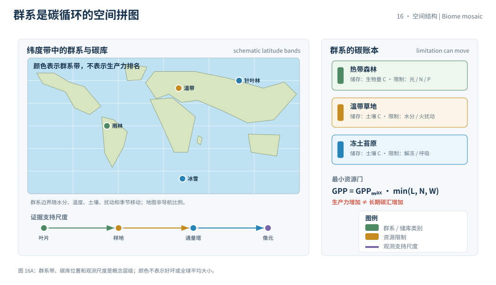
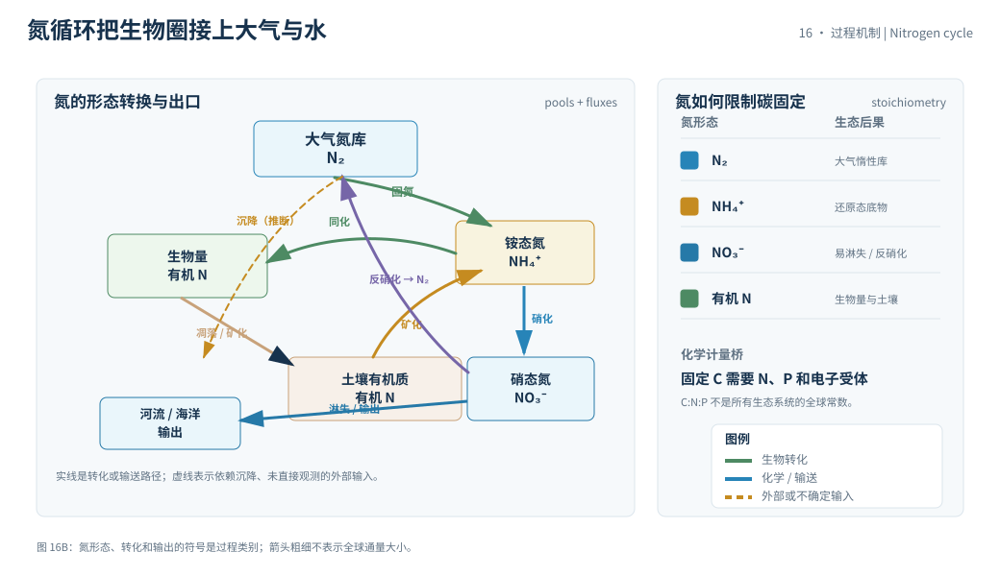

本页目录
16 · 生物圈与生物地球化学循环
生物圈不是碳循环旁边的一层绿色装饰。植物、微生物、动物和土壤把能量、碳、氮、磷与水耦合起来；一个通量的变化常会把限制条件移到另一个元素。本页用最小生态账本说明“生产力增加”为什么不自动等于“长期碳汇增加”。
资料核验日期：2026-09-01。实验中的光照、氮、水分和温度都是无量纲或教学参数，不是某个生态站的实时观测；可更新观测若被引用，会写明指标年、基准和核验日期。
学习层：一片森林的“吸碳”要经过光、营养、水和呼吸四道门
1. 具体情境：给一块恢复中的林地安排资源
生态恢复团队有一块正在恢复的林地。光照充足，但土壤氮有限；另一块地氮够，却在干旱和高温下工作。团队想知道：增加哪一种资源，才会让净生态系统碳交换朝吸收方向移动？
这不是“施肥一定增汇”的预测题，而是一个因果账本：先找当前最紧的限制因子，再检查增加总光合是否被呼吸、分解、火灾或养分流失抵消。实验使用相同的简化生态系统，方便隔离机制。
2. 揭示前预测：限制因子会不会自动换位
打开实验前，预测三件事：如果氮已经高于光照限制，再加氮会不会显著增加 GPP？温度升高时，呼吸项在一个 \(Q_{10}\) 近似下会增加还是减少？“植物从大气吸收碳”与“生态系统向大气净排碳”能否同时成立？
先写出你认为最小的限制因子。实验揭示的是这个玩具模型的因果链，不是对一片真实森林的管理建议。
3. 公式桥：光合作用、呼吸和元素化学计量
把总初级生产力写成可审计的资源门控：
其中 \(L,N,W\in[0,1]\) 分别是光、可利用氮和水分的相对供给；\(GPP\) 是总初级生产力。净初级生产力为
而生态系统净碳交换可以约定为
其中 \(R_{\rm total}\) 是总生态系统呼吸，至少区分植物呼吸、微生物呼吸和消费者呼吸；因此本实验计算的净生态系统生产是
不是把总呼吸误写成植物呼吸的 \(NPP\)。本页采用“\(NEE>0\) 表示向大气净排碳”的符号，所以 \(NEE<0\) 才是净吸收。温度对呼吸的教学近似是
\(Q_{10}\) 是温度每升高 \(10\ ^\circ\mathrm C\) 时的速率比，实际值随底物、微生物群落和水分而变。碳账本每年还要扣除收获、火灾、迁移和溶解有机碳输出，不能只留下叶片光合作用。
元素循环的桥梁是化学计量：固定一单位碳需要相应的氮、磷和电子受体。若氮供应不足，增加光照的潜在收益会被酶、叶面积或叶绿素合成卡住；若水分不足，气孔关闭会同时影响碳进入和蒸散冷却。
4. 互动实验：找出当前的瓶颈，并看净交换符号
无 JavaScript 时的静态 fallback：默认取相对光照 \(L=0.75\)、氮 \(N=0.55\)、水分 \(W=0.80\)、温度 \(T=20\ ^\circ\mathrm C\)、时间 \(t=20\ \mathrm{yr}\)。GPP 的基准是 \(120\) 相对碳单位/年，初始生物量是 \(100\) 相对碳单位；这些是可解释的教学参数。
| 账本量 | 默认结果 | 单位 / 解释 |
|---|---|---|
| 当前限制因子 | 氮 | \(\min(L,N,W)\) 的最小项 |
| 年 GPP | 66.00 | 相对碳单位/年 |
| 年总生态系统呼吸 | 起始 55.00；末年 61.32 | 相对碳单位/年；含植物和微生物呼吸的代理 |
| 年末净生态系统生产（GPP−总呼吸） | 4.68 | 相对碳单位/年；末年 \(GPP-R_{\rm total}\) |
| 20 年累计净生态系统生产 | 148.35 | 相对碳单位；逐年 \(GPP-R_{\rm total}\) |
| 20 年后生物量 | 111.87 | 相对碳单位；离散教学积分 |
| NEE 符号 | 负 | 负值代表净吸收 |
调高不是当前瓶颈的资源，结果可能很小；把温度和水分一起改变，才能看出“生产力”和“净生态系统交换”不是同一指标。
5. 边界与常见误区：绿色不等于无限碳汇
- GPP 不是净碳汇：植物先吸收二氧化碳，再通过植物呼吸、微生物分解和消费者呼吸把部分碳送回大气。
- NPP 也不等于长期储存：木材、土壤有机质和沉积物的周转时间不同；快周转叶片与慢周转木质素不能合成一个库。
- 施肥响应有边界：氮增加可能受到磷、水、光、温度或微生物过程限制，也可能通过氧化亚氮排放和径流损失产生额外影响。
- \(Q_{10}\) 不是普适常数：低温、干旱、底物耗尽和热胁迫会改变呼吸曲线；把经验系数外推到所有生态系统会越过模型边界。
生物地球化学循环还包括氮的硝化与反硝化、磷的风化与吸附、硫的氧化还原以及水的蒸散通道。它们耦合，却不具有相同的守恒边界和平均停留时间。
迁移问题：如果增加氮让 GPP 上升，但土壤呼吸上升得更快，NEE 的符号会怎样变化？若把森林替换成湿地，你会在模型中补入甲烷、缺氧分解还是水位边界？请说明新项的单位和观测证据。


1. 生物泵与陆地碳库
生物泵把表层固定的有机碳通过颗粒沉降、溶解有机碳和食物网输送到更深海层。陆地系统则通过木材、根系、枯落物、土壤团聚体和湿地沉积物储存碳。关键不是“有没有绿色”，而是输入、输出和周转时间是否形成净储存。
海洋浮游植物的营养限制受氮、磷、铁和光共同控制；陆地植物还受到水分、温度、叶面积和大气成分制约。限制因子会随季节、深度、物种和干扰改变，所以一个地点的实验不能直接代表整个生物圈。
2. 碳与氮的耦合
固氮把大气氮转为生物可用形态，硝化与反硝化改变无机氮的氧化态；这些过程受氧、pH、温度和底物控制。氮循环的变化可以改变碳吸收，也可能增加含氮温室气体的排放。
化学计量关系不是把 C:N:P 固定为一个全球常数。所谓 Redfield 比例适合某些海洋颗粒物的经验基准，不应未经说明地套到每一种植物、土壤或湖泊。正式分析应写清样品、深度、季节和测量方法。
3. 证据层：从叶片到卫星
叶片气体交换和通量塔给出局地过程，样地调查与森林清查给出生物量，遥感给出叶面积或光学代理，生态系统模型把这些信息映射到更大空间。每个尺度都带来代表性误差：像元平均不等于地面平均，通量塔也不等于整个流域。
变动指标应优先查阅 IPCC AR6 WGI 第 5 章、NOAA Carbon Cycle 和相应观测数据文档；本页没有把某个当前年度碳汇数字写成结论。
4. 误差预算与尺度桥
通量塔测到的是脚下的一块生态系统，卫星像元则是空间平均的光谱响应；两者比较前要先对齐足迹、时间窗和变量定义。
重复测量可以降低部分随机误差，但站点选择、地表异质性、算法先验和模型结构属于代表性或系统误差。
把叶片尺度的 GPP 外推到流域，需要生物量、土地覆盖、水热条件和扰动记录；外推不是简单地把一个数字乘以面积。
因此，生物圈碳汇的证据链应同时保留过程观测、储量清查、遥感代理和模型假设，任何一栏都不能独自承担全部结论。
5. 速查结论
- 先找最小资源门，再讨论增加投入的边际效应。
- GPP、NPP、NEE 和储碳是不同账本量，符号必须先声明。
- 温度、水分、营养和扰动会把限制因子从一个过程转移到另一个过程。
- 生物圈反馈需要化学计量和周转时间，不能只画一片绿色箭头。
下一页把这些现代过程放进冰芯、树轮、珊瑚与沉积物的古气候档案，学习代理记录怎样被校准。